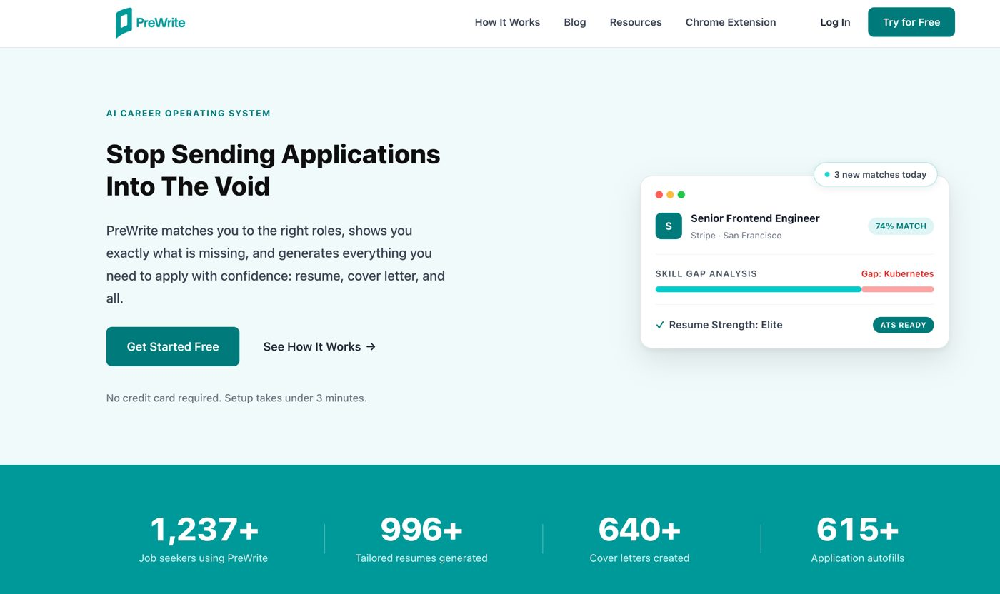
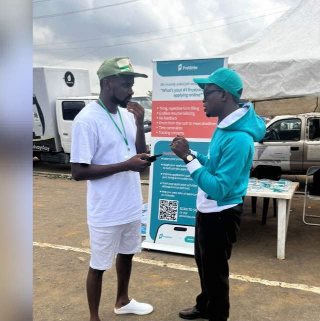
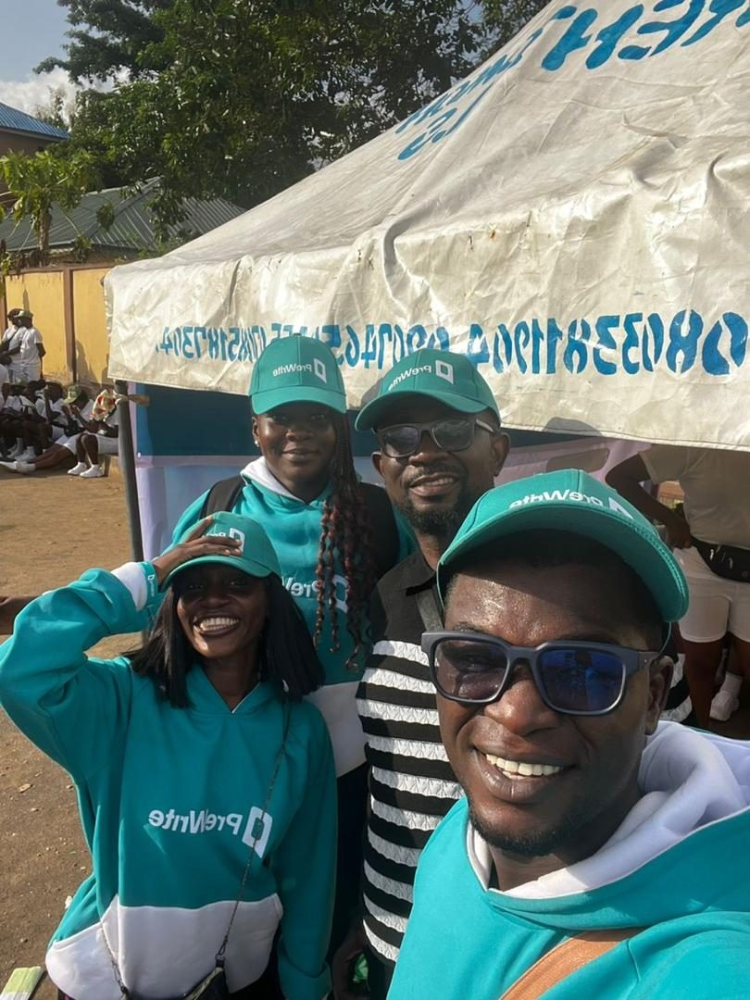
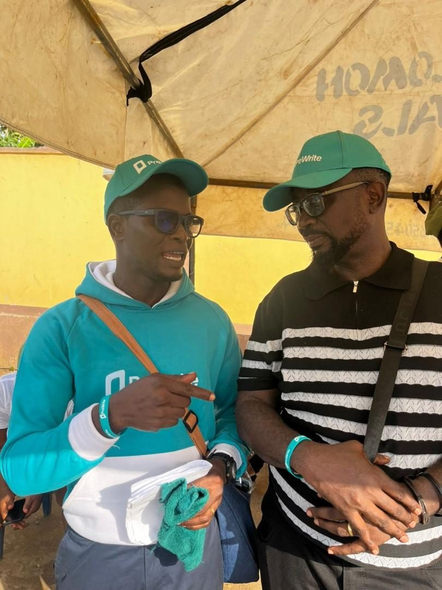

From 100 beta users to 1,000+ in under four months
How an activation-first strategy and an NYSC partnership grew an AI job application tool, without large-scale paid ads.
Sources: PreWrite AI LinkedIn posts (15 May and 13 July 2026), LinkedIn page analytics, prewriteai.com live counter (17 Nov 2026)
Starting from zero in October 2025
PreWrite AI is an AI job application tool: tailored CVs and cover letters, a job match score, and a Chrome extension that autofills application forms. It is built for Nigerian graduates and NYSC corps members applying for their first roles, often unsure how to structure a CV or what a recruiter’s screening system looks for.
Same CV, every job
Rewriting the same CV for every application, filtered out before a person reads it, with no sense of fit before applying.
No audience yet
A product still being built, no users, no community, no brand presence and a lean budget.
Three people
A software developer, a business lead, and me owning marketing and growth.

What I owned, and how the brief changed
I owned all growth: strategy, planning, execution and optimisation, across audience research, go-to-market, design direction, content, community, email, partnerships and campaign planning.
The brief changed as we learned. The decision in March 2026 is the one that shaped the results.
Five moves that produced the growth
1. Foundation, October 2025 to February 2026
- Oct 2025Marketing strategy and pre-launch plan: channels, tools, survey and waitlist funnel
- Nov 2025Monthly content themes, creative brief and brand direction with the team designer
- Jan 2026NYSC Career Advantage Program designed, with Career Captains as camp ambassadors
- Feb 2026Build-in-public posts and waitlist nurturing on LinkedIn while the core build shipped
- Mar 2026Beta opened to 100 testers with a structured three-day test plan
Every channel used later was planned here, including the NYSC route, months before the camp launch.
2. A beta built to answer four questions
A three-day beta tested onboarding friction, speed, output quality and confidence. Day 1: set up a profile and submit a first application. Day 2: apply at volume and compare with doing it by hand. Day 3: structured feedback. I wrote and sent the email and WhatsApp sequence.
3. The pivot: activation before awareness
| Before: the October plan | After: the March plan |
|---|---|
| Billboards, PR and paid ads on four platforms | Every new user to a first successful application within 24 hours |
| A ₦2–3M budget over six months | Guided onboarding, with the WhatsApp group as live support |
| Success measured in reach and waitlist size | Real results turned into proof for the next users |
With around 100 testers, spending on awareness would have sent people into an onboarding we had not yet proven. So the order became activation first, proof second, paid reach last.
4. The NYSC Career Advantage Program
PreWrite launched publicly at the NYSC Lagos orientation camp in May 2026. Corps members generated CVs and cover letters on the spot, and a week later PreWrite had 527 users. Three things made it work:
- Career Captains: corps member ambassadors, each onboarding 5 to 10 members of their platoon. Corps members trust corps members, not brands.
- Certification that needs the product: to be certified, corps members submitted a CV, cover letter and match score made in PreWrite, so every session became adoption.
- An official partnership with NYSC’s career readiness programme for SAED-trained corps members, with training delivered across all 26 local government training centres in Lagos State.
My part was programme design, activation, adoption tracking and the certification assessment. Paul Omeje, the business lead, drafted the camp ambassador model and wrote and presented the training sessions.



5. Content and lifecycle
On LinkedIn, launch updates drew 145 to 178 impressions each. In late June I switched to story-led posts built on a real job seeker’s situation. The top post (“I applied to 5 roles last month…”) reached 611 impressions at a 16.5% engagement rate, and June passed 3,000 impressions. In total the page earned 6,397 organic impressions, 357 reactions and 190 comments with nothing spent on LinkedIn ads.
Email ran on six behaviour-based segments, each with one job:
| Segment | Job of the email |
|---|---|
| New signups | Activate quickly |
| Active users | Build a usage habit |
| Inactive users | Re-engage cheaply |
| Non-extension users | Drive extension adoption |
| Document generators | Build confidence |
| Highly engaged | Turn into advocates |
Dated, checkable milestones
| Date | Milestone |
|---|---|
| March 2026 | About 100 beta users |
| 15 May 2026 | 527 users, 612 resumes and 184 cover letters, a week after the camp launch |
| 13 July 2026 | 1,000+ users, 1,200+ resumes and 650+ cover letters |
| November 2026 | 1,237+ job seekers on the live counter, and still rising after handover |
Plus an official partnership with NYSC’s career readiness programme, and 265 engaged members across two WhatsApp community groups used for onboarding and live support.
What I bring to the next project
Plan big, spend late
The October plan was built for a ₦2–3M awareness push. Moving to activation first got results without that spend.
Stories beat announcements
Posts about a real job seeker’s problem outperformed product updates by a wide margin, at no extra cost.
Live product: prewriteai.com